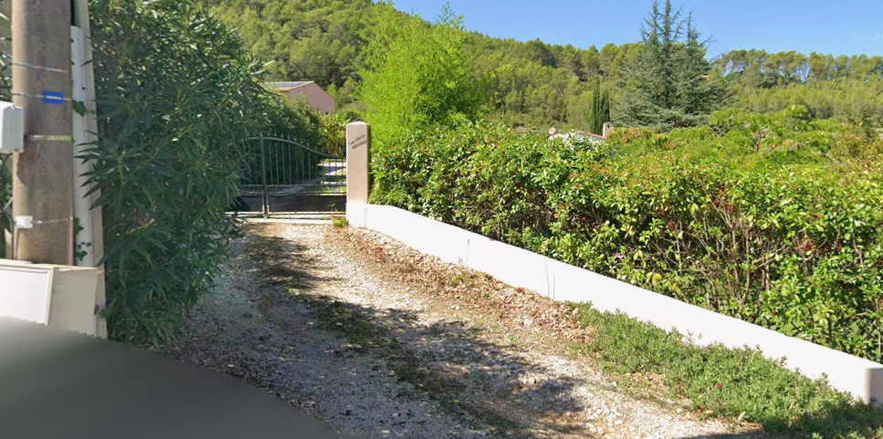
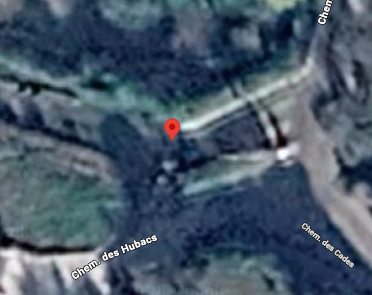

Une grande maison provençale face au massif boisé. 480, chemin des Hubacs, Solliès-Toucas.
La marque prend le nom du chemin : {{ brandName }}. En provençal, l’ubac est le versant ombragé d’une colline, celui où les pins restent verts et où l’on trouve de la fraîcheur en été. Le nom vient du lieu et se retient facilement, en France comme à l’étranger.
Le nom Sandiade, gravé sur le pilier du portail, reste un détail qu’on découvre en arrivant. Il peut apparaître dans le récit ou en légende de la photo du portail, jamais dans le logo.
Les huit atouts à mettre en avant, dans cet ordre de priorité.
Un logotype typographique, sans pictogramme. Le monogramme, une initiale italique dans un cercle fin comme un tampon de cire, sert aux petits formats : favicon, filigrane photo, en-tête de dossier PDF.
Toutes les couleurs sont tirées des photos : le mur blanc chaulé, le gravier de l’allée, les pins du massif, le crépi rosé de la façade et le ciel du Var. La Chaux occupe 70 % de la surface, le Pin 20 %, les accents 10 % au plus.
On écrit comme le propriétaire qui fait visiter, pas comme une agence. On décrit ce qu’on voit, ce qu’on entend, ce qu’on fait dans la maison, et on laisse l’acheteur s’y projeter.
« Le soir, on allume le barbecue près du poolhouse et on finit la partie de boules pendant que le massif devient bleu. L’hiver, on se retrouve autour de la cheminée. »
« Coup de cœur assuré ! Rare sur le secteur, cette villa d’exception aux prestations haut de gamme saura vous séduire. »
Lumière naturelle, de préférence le matin ou en fin d’après-midi. Couleurs fidèles : pas de ciel saturé, pas de HDR, pas de grand-angle déformant. Personne à l’image, aucune voiture, aucune poubelle.


Angles droits, filets de 1 px, aucune ombre portée. Les arrondis sont réservés aux pastilles. Les transitions durent 200 ms en ease-out.
À coller dans le projet Claude Code (par exemple styles/tokens.css). Toutes les valeurs de cette charte s’y trouvent.
{{ tokens }}
Le site tient sur une seule page longue : accueil, la maison, l’extérieur, le lieu, la visite.